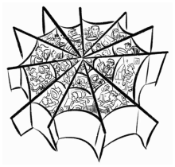

2009 年全国硕士研究生招生考试英语
Section I Use of English
Directions:
Read the following text. Choose the best word(s) for each numbered blank and mark A, B, C or D on the ANSWER SHEET 1. (10 points)
Research on animal intelligence always makes us wonder just how smart humans are. 1 the fruit-fly experiments described by Carl Zimmer in the Science Times. Fruit flies who were taught to be smarter than the average fruit fly 2 to live shorter lives. This suggests that 3 bulbs burn longer, that there is a(n) 4 in not being too bright.
Intelligence, it 5 , is a high-priced option. It takes more upkeep, burns more fuel and is slow 6 the starting line because it depends on learning — a(n) 7 process — instead of instinct. Plenty of other species are able to learn, and one of the things they’ve apparently learned is when to 8 .
Is there an adaptive value to 9 intelligence? That’s the question behind this new research. Instead of casting a wistful glance 10 at all the species we’ve left in the dust I.Q.-wise, it implicitly asks what the real 11 of our own intelligence might be. This is 12 the mind of every animal we’ve ever met.
Research on animal intelligence also makes us wonder what experiments animals would 13 on humans if they had the chance. Every cat with an owner, 14 , is running a small-scale study in operant conditioning. We believe that 15 animals ran the labs, they would test us to 16 the limits of our patience, our faithfulness, our memory for locations. They would try to decide what intelligence in humans is really 17 , not merely how much of it there is. 18 , they would hope to study a(n) 19 question: Are humans actually aware of the world they live in? 20 the results are inconclusive.
Section II Reading Comprehension
Part A
Directions:
Read the following four texts. Answer the questions below each text by choosing A, B, C or D. Mark your answers on the ANSWER SHEET 1. (40 points)
Text 1
Habits are a funny thing. We reach for them mindlessly, setting our brains on auto-pilot and relaxing into the unconscious comfort of familiar routine. “Not choice, but habit rules the unreflecting herd,” William Wordsworth said in the 19th century. In the ever-changing 21st century, even the word “habit” carries a negative implication.
So it seems paradoxical to talk about habits in the same context as creativity and innovation. But brain researchers have discovered that when we consciously develop new habits, we create parallel paths, and even entirely new brain cells, that can jump our trains of thought onto new, innovative tracks.
Rather than dismissing ourselves as unchangeable creatures of habit, we can instead direct our own change by consciously developing new habits. In fact, the more new things we try — the more we step outside our comfort zone — the more inherently creative we become, both in the workplace and in our personal lives.
But don’t bother trying to kill off old habits; once those ruts of procedure are worn into the brain, they’re there to stay. Instead, the new habits we deliberately press into ourselves create parallel pathways that can bypass those old roads.
“The first thing needed for innovation is a fascination with wonder,” says Dawna Markova, author of The Open Mind. “But we are taught instead to ‘decide’, just as our president calls himself ‘the Decider’.” She adds, however, that “to decide is to kill off all possibilities but one. A good innovational thinker is always exploring the many other possibilities.”
All of us work through problems in ways of which we’re unaware, she says. Researchers in the late 1960s discovered that humans are born with the capacity to approach challenges in four primary ways: analytically, procedurally, relationally (or collaboratively) and innovatively. At the end of adolescence, however, the brain shuts down half of that capacity, preserving only those modes of thought that have seemed most valuable during the first decade or so of life.
The current emphasis on standardized testing highlights analysis and procedure, meaning that few of us inherently use our innovative and collaborative modes of thought. “This breaks the major rule in the American belief system — that anyone can do anything,” explains M. J. Ryan, author of the 2006 book This Year I Will... and Ms. Markova’s business partner. “That’s a lie that we have perpetuated, and it fosters commonness. Knowing what you’re good at and doing even more of it creates excellence.” This is where developing new habits comes in.
21. In Wordsworth’s view, “habits” is characterized by being ____
22. Brain researchers have discovered that the formation of new habits can be ____
23. The word “ruts” (Paragraph 4) is closest in meaning to ____
24. Dawna Markova would most probably agree that ____
25. Ryan’s comments suggest that the practice of standardized testing ____
Text 2
It is a wise father that knows his own child, but today a man can boost his paternal (fatherly) wisdom — or at least confirm that he’s the kid’s dad. All he needs to do is shell out $30 for a paternity testing kit (PTK) at his local drugstore — and another $120 to get the results.
More than 60,000 people have purchased the PTKs since they first became available without prescriptions last year, according to Doug Fogg, chief operating officer of Identigene, which makes the over-the-counter kits. More than two dozen companies sell DNA tests directly to the public, ranging in price from a few hundred dollars to more than $2,500.
Among the most popular: paternity and kinship testing, which adopted children can use to find their biological relatives and families can use to track down kids put up for adoption. DNA testing is also the latest rage among passionate genealogists — and supports businesses that offer to search for a family’s geographic roots.
Most tests require collecting cells by swabbing saliva in the mouth and sending it to the company for testing. All tests require a potential candidate with whom to compare DNA.
But some observers are skeptical. “There’s a kind of false precision being hawked by people claiming they are doing ancestry testing,” says Troy Duster, a New York University sociologist. He notes that each individual has many ancestors — numbering in the hundreds just a few centuries back. Yet most ancestry testing only considers a single lineage, either the Y chromosome inherited through men in a father’s line or mitochondrial DNA, which is passed down only from mothers. This DNA can reveal genetic information about only one or two ancestors, even though, for example, just three generations back people also have six other great-grandparents or, four generations back, 14 other great-great-grandparents.
Critics also argue that commercial genetic testing is only as good as the reference collections to which a sample is compared. Databases used by some companies don’t rely on data collected systematically but rather lump together information from different research projects. This means that a DNA database may have a lot of data from some regions and not others, so a person’s test results may differ depending on the company that processes the results. In addition, the computer programs a company uses to estimate relationships may be patented and not subject to peer review or outside evaluation.
26. In Paragraphs 1 and 2, the text shows PTK’s ____
27. PTK is used to ____
28. Skeptical observers believe that ancestry testing fails to ____
29. In the last paragraph, a problem commercial genetic testing faces is ____
30. An appropriate title for the text is most likely to be____
Text 3
The relationship between formal education and economic growth in poor countries is widely misunderstood by economists and politicians alike. Progress in both areas is undoubtedly necessary for the social, political, and intellectual development of these and all other societies; however, the conventional view that education should be one of the very highest priorities for promoting rapid economic development in poor countries is wrong. We are fortunate that it is, because building new educational systems there and putting enough people through them to improve economic performance would require two or three generations. The findings of a research institution have consistently shown that workers in all countries can be trained on the job to achieve radically higher productivity and, as a result, radically higher standards of living.
Ironically, the first evidence for this idea appeared in the United States. Not long ago, with the country entering a recession and Japan at its pre-bubble peak, the U.S. workforce was derided as poorly educated and one of the primary causes of the poor U.S. economic performance. Japan was, and remains, the global leader in automotive-assembly productivity. Yet the research revealed that the U.S. factories of Honda, Nissan, and Toyota achieved about 95 percent of the productivity of their Japanese counterparts — a result of the training that U.S. workers received on the job.
More recently, while examining housing construction, the researchers discovered that illiterate, non-English-speaking Mexican workers in Houston, Texas, consistently met best-practice labor productivity standards despite the complexity of the building industry’s work.
What is the real relationship between education and economic development? We have to suspect that continuing economic growth promotes the development of education even when governments don’t force it. After all, that’s how education got started. When our ancestors were hunters and gatherers 10,000 years ago, they didn’t have time to wonder much about anything besides finding food. Only when humanity began to get its food in a more productive way was there time for other things.
As education improved, humanity’s productivity potential increased as well. When the competitive environment pushed our ancestors to achieve that potential, they could in turn afford more education. This increasingly high level of education is probably a necessary, but not a sufficient, condition for the complex political systems required by advanced economic performance. Thus poor countries might not be able to escape their poverty traps without political changes that may be possible only with broader formal education. A lack of formal education, however, doesn’t constrain the ability of the developing world’s workforce to substantially improve productivity for the foreseeable future. On the contrary, constraints on improving productivity explain why education isn’t developing more quickly there than it is.
31. The author holds in Paragraph 1 that the importance of education in poor countries
____
32. It is stated in Paragraph 1 that the construction of a new educational system ____
33. A major difference between the Japanese and U.S. workforces is that ____
34. The author quotes the example of our ancestors to show that education emerged ____
35. According to the last paragraph, development of education ____
Text 4
The most thoroughly studied intellectuals in the history of the New World are the ministers and political leaders of seventeenth-century New England. According to the standard history of American philosophy, nowhere else in colonial America was “so much importance attached to intellectual pursuits.” According to many books and articles, New England’s leaders established the basic themes and preoccupations of an unfolding, dominant Puritan tradition in American intellectual life.
To take this approach to the New Englanders normally means to start with the Puritans’ theological innovations and their distinctive ideas about the church — important subjects that we may not neglect. But in keeping with our examination of southern intellectual life, we may consider the original Puritans as carriers of European culture, adjusting to New World circumstances. The New England colonies were the scenes of important episodes in the pursuit of widely understood ideals of civility and virtuosity.
The early settlers of Massachusetts Bay included men of impressive education and influence in England. Besides the ninety or so learned ministers who came to Massachusetts churches in the decade after 1629, there were political leaders like John Winthrop, an educated gentleman, lawyer, and official of the Crown before he journeyed to Boston. These men wrote and published extensively, reaching both New World and Old World audiences, and giving New England an atmosphere of intellectual earnestness.
We should not forget, however, that most New Englanders were less well educated. While few craftsmen or farmers, let alone dependents and servants, left literary compositions to be analyzed, it is obvious that their views were less fully intellectualized. Their thinking often had a traditional superstitious quality. A tailor named John Dane, who emigrated in the late 1630s, left an account of his reasons for leaving England that is filled with signs. Sexual confusion, economic frustrations, and religious hope — all came together in a decisive moment when he opened the Bible, told his father that the first line he saw would settle his fate, and read the magical words: “Come out from among them, touch no unclean thing, and I will be your God and you shall be my people.” One wonders what Dane thought of the careful sermons explaining the Bible that he heard in Puritan churches.
Meanwhile, many settlers had slighter religious commitments than Dane’s, as one clergyman learned in confronting folk along the coast who mocked that they had not come to the New world for religion. “Our main end was to catch fish.”
36. The author holds that in the seventeenth-century New England ____
37. It is suggested in Paragraph 2 that New Englanders ____
38. The early ministers and political leaders in Massachusetts Bay ____
39. The story of John Dane shows that less well-educated New Englanders were often
____
40. The text suggests that early settlers in New England ____
Part B
Directions:
In the following text, some sentences have been removed. For Questions 41-45, choose the most suitable one from the list A-G to fit into each of the numbered blanks. There are two extra choices, which do not fit in any of the blanks. Mark your answers on the ANSWER SHEET 1. (10 points)
Coinciding with the groundbreaking theory of biological evolution proposed by British naturalist Charles Darwin in the 1860s, British social philosopher Herbert Spencer put forward his own theory of biological and cultural evolution. Spencer argued that all worldly phenomena, including human societies, changed over time, advancing toward perfection. (41) ___________________________
American social scientist Lewis Henry Morgan introduced another theory of cultural evolution in the late 1800s. Morgan helped found modern anthropology — the scientific study of human societies, customs, and beliefs — thus becoming one of the earliest anthropologists. In his work, he attempted to show how all aspects of culture changed together in the evolution of societies. (42) __________________________
In the early 1900s in North America, German-born American anthropologist Franz Boas developed a new theory of culture known as historical particularism. Historical particularism, which emphasized the uniqueness of all cultures, gave new direction to anthropology. (43) __________________________
Boas felt that the culture of any society must be understood as the result of a unique history and not as one of many cultures belonging to a broader evolutionary stage or type of culture. (44) __________________________
Historical particularism became a dominant approach to the study of culture in American anthropology, largely through the influence of many students of Boas. But a number of anthropologists in the early 1900s also rejected the particularist theory of culture in favor of diffusionism. Some attributed virtually every important cultural achievement to the inventions of a few, especially gifted peoples that, according to diffusionists, then spread to other cultures. (45) __________________________
Also in the early 1900s, French sociologist Emile Durkheim developed a theory of culture that would greatly influence anthropology. Durkheim proposed that religious beliefs functioned to reinforce social solidarity. An interest in the relationship between the function of society and culture became a major theme in European, and especially British, anthropology.
A) Other anthropologists believed that cultural innovations, such as inventions, had a single origin and passed from society to society. This theory was known as diffusionism.
B) In order to study particular cultures as completely as possible, he became skilled in linguistics, the study of languages, and in physical anthropology, the study of human biology and anatomy.
C) He argued that human evolution was characterized by a struggle he called the “survival of the fittest,” in which weaker races and societies must eventually be replaced by stronger, more advanced races and societies.
D) They also focused on important rituals that appeared to preserve a people’s social structure, such as initiation ceremonies that formally signify children’s entrance into adulthood.
E) Thus, in his view, diverse aspects of culture, such as the structure of families, forms of marriage, categories of kinship, ownership of property, forms of government, technology, and systems of food production, all changed as societies evolved.
F) Supporters of the theory viewed culture as a collection of integrated parts that work together to keep a society functioning.
G) For example, British anthropologists Grafton Elliot Smith and W.
J) Perry incorrectly
suggested, on the basis of inadequate information, that farming, pottery making, and
metallurgy all originated in ancient Egypt and diffused throughout the world. In fact,
all of these cultural developments occurred separately at different times in many parts
of the world.
Part C
Directions:
Read the following text carefully and then translate the underlined segments into Chinese. Your translation should be written clearly on the ANSWER SHEET 2. (10 points)
There is a marked difference between the education which every one gets from living with others and the deliberate educating of the young. In the former case the education is incidental; it is natural and important, but it is not the express reason of the association. (46) It may be said that the measure of the worth of any social institution is its effect in enlarging and improving experience, but this effect is not a part of its original motive. Religious associations began, for example, in the desire to secure the favor of overruling powers and to ward off evil influences; family life in the desire to gratify appetites and secure family perpetuity; systematic labor, for the most part, because of enslavement to others, etc. (47) Only gradually was the by-product of the institution noted, and only more gradually still was this effect considered as a directive factor in the conduct of the institution. Even today, in our industrial life, apart from certain values of industriousness and thrift, the intellectual and emotional reaction of the forms of human association under which the world’s work is carried on receives little attention as compared with physical output.
But in dealing with the young, the fact of association itself as an immediate human fact, gains in importance. (48) While it is easy to ignore in our contact with them the effect of our acts upon their disposition, it is not so easy as in dealing with adults. The need of training is too evident and the pressure to accomplish a change in their attitude and habits is too urgent to leave these consequences wholly out of account. (49) Since our chief business with them is to enable them to share in a common life we cannot help considering whether or not we are forming the powers which will secure this ability. If humanity has made some headway in realizing that the ultimate value of every institution is its distinctively human effect we may well believe that this lesson has been learned largely through dealings with the young.
(50) We are thus led to distinguish, within the broad educational process which we have been so far considering, a more formal kind of education — that of direct tuition or schooling. In undeveloped social groups, we find very little formal teaching and training. These groups mainly rely for instilling needed dispositions into the young upon the same sort of association which keeps the adults loyal to their group.
Section III Writing
Part A
51. Directions:
Restrictions on the use of plastic bags have not been so successful in some regions. “White Pollution” is still going on. Write a letter to the editor (s) of your local newspaper to
1) give your opinions briefly, and
2) make two or three suggestions.
You should write about 100 words on ANSWER SHEET 2. Do not sign your own name at the end of the letter. Use “Li Ming” instead. Do not write the address. (10 points)
Part B
52. Directions:
Write an essay of 160-200 words based on the following drawing. In your essay, you should
1) describe the drawing briefly,
2) explain its intended meaning, and then
3) give your comments.
You should write neatly on ANSWER SHEET 2. (20 points)
